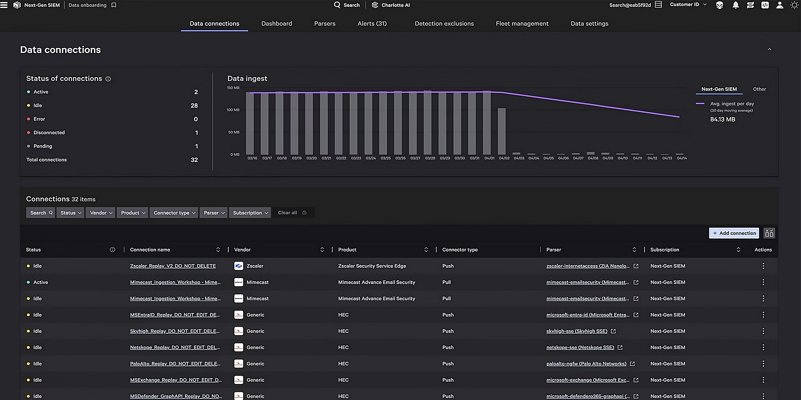
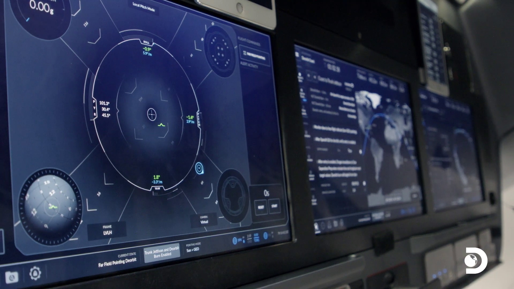
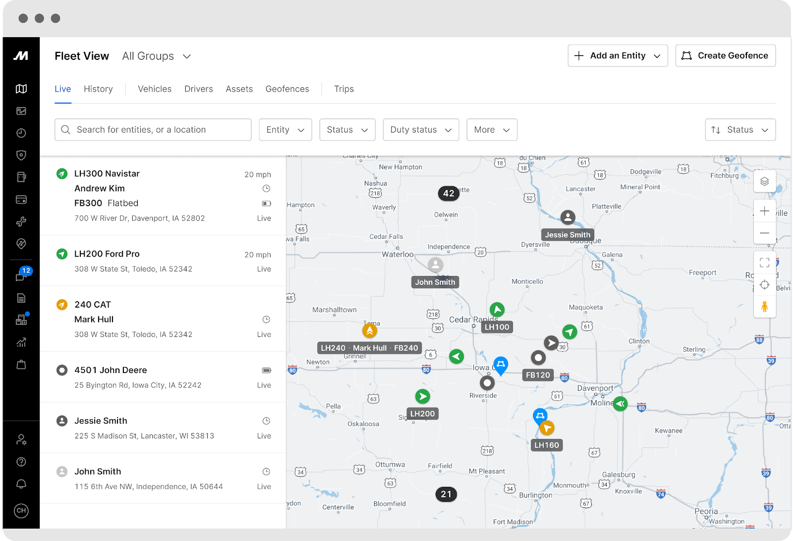
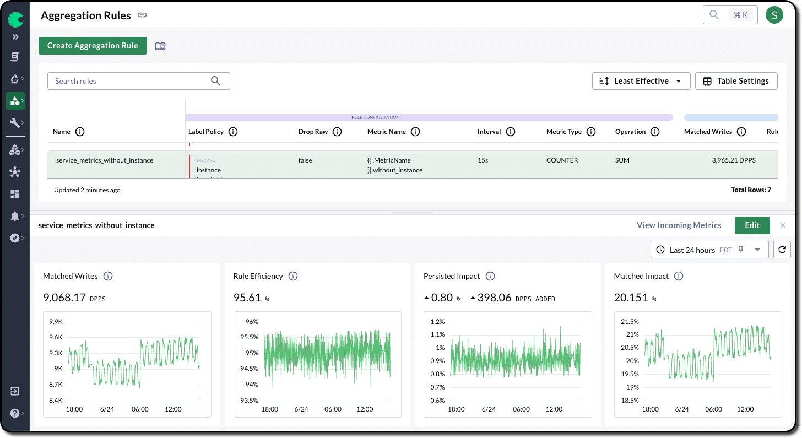
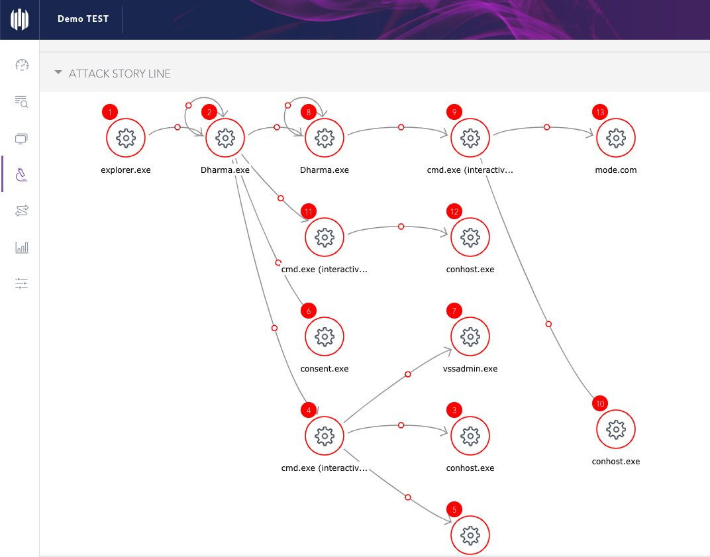
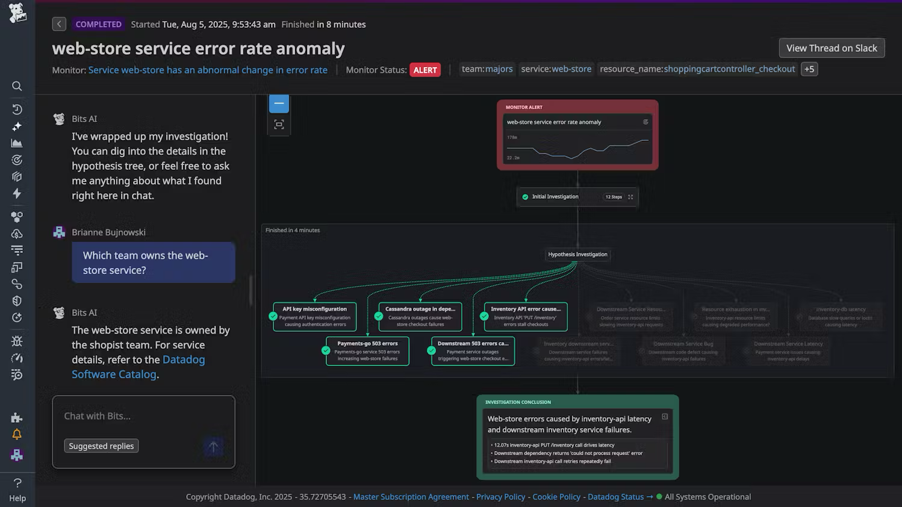
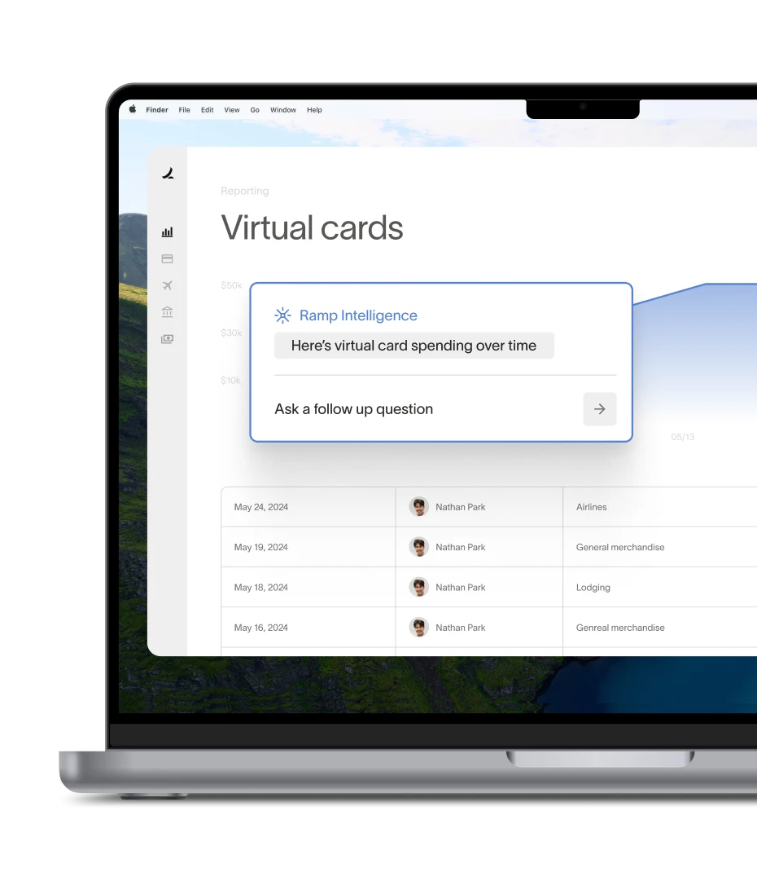

Bench: Quiet UI × Crisis — Evidencia NUEVO
Quiet UI / Referencias Inter-Industria

CrowdStrike Falcon
Cybersecurity · Achromatic baseline
Pantalla oscura 99% del tiempo. Rojo solo en amenaza real. Zero noise philosophy — si ves color, actúa.


SpaceX Mission Control
Aerospace · Exception-based alerts
Miles de telemetrías → solo alarmas críticas escalan. Los operadores no monitorean — responden a excepciones.


Motive
Logística / Flotas · Edge AI filtering
Edge AI filtra 99% de alertas falsas. Solo escala lo que requiere intervención humana. El sistema descarta en el borde, no en el dashboard.
Bench: Quiet UI × Crisis — Patrones NUEVO
Quiet UI / Aplicación en Arquitectura CORE

Bench: Time Sight × Anticipación — Evidencia NUEVO
Time Sight / Referencias Inter-Industria

Chronosphere
Observability · Temporal lens
Retención adaptativa: más detalle cuando importa, menos cuando no. Lens temporal para distinguir pico vs tendencia.

Tesla Fleet
Fleet management · Predictive maintenance
Predicción de falla basada en degradación temporal. No espera la falla — la anticipa con ventana de acción.

SentinelOne Storylines
Cybersecurity · Causal timeline
Storyline visual: qué proceso disparó qué otro, en qué orden. Cadena causal, no lista de eventos.
Bench: Multi-pilar × Alineación — Evidencia NUEVO
Multi-pilar / Referencias Inter-Industria
Tesla Fleet
Fleet · Executive overview
Time Scrubbing: rebobinar el estado de la flota para entender causalidad. Plan vs realidad continuo, no al cierre mensual.

Datadog Executive
Observability · Proactive reporting
Bits AI genera el reporte antes de que lo pidas. El ejecutivo recibe la narrativa, no el dashboard.



Ramp Financial
Fintech · Cost visibility
Cada métrica operacional se traduce automáticamente a impacto en dólares. No "3 camiones parados" sino "USD 45k/hora perdidos."